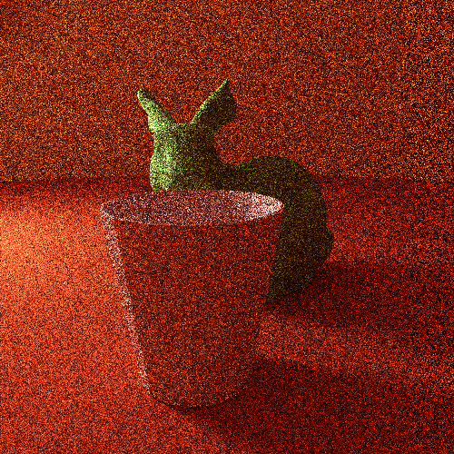

Space Partitioning

This is a collection of acceleration data structures I have implemented in various graphics projects. Some were used to optimize rendered scene objects, while others helped minimize intersection checks with complex meshes.
Bounding Volume Hierarchy (BVH)
BVH is a tree structure where each node represents a bounding volume that encloses a subset of objects. It's commonly used in ray tracing and collision detection to quickly discard large groups of objects that don’t intersect with a ray or volume.
Octrees
Octrees recursively subdivide 3D space into eight octants. They are especially useful in scenes with large empty spaces.
KD-trees
KD-trees are binary trees that split space along alternating axes. They are used for nearest neighbor searches and ray tracing. In the image below, I used KD-trees to optimize ray intersection with the mesh of the bunny, as it is heavy in polygons.

Gilbert Johnson Keerthi (GJK)
GJK is an algorithm used to determine the intersection of convex shapes. It operates in Minkowski space and is both fast and accurate, it is widely used in physics engines for real-time collision detection. As a drawbac it does not return intersecion information (time, depth...)